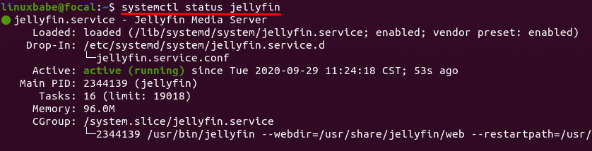

Web Development Expertise
With proficiency in HTML, CSS, JavaScript, Python, and C++, I bring a methodical approach to building functional, data-driven systems that support medical drone technology. Utilizing tools such as VS Code, GitHub, and Adobe Creative Suite, I focus on clear system integration, optimized user interfaces and reliable backend performance to enhance critical healthcare logistics.
Key Strengths:
- Website Architecture & Design. Ensuring intuitive, efficient UX for healthcare professionals accessing drone logistics platforms.
- Database & Server Integration. Supporting real-time tracking and data exchange for medical drone networks.
- Testing & Optimization. Applying rigorous testing methods to ensure reliability in time-sensitive medical transport systems.

Terminal on Ubuntu OS used to build personal media server.